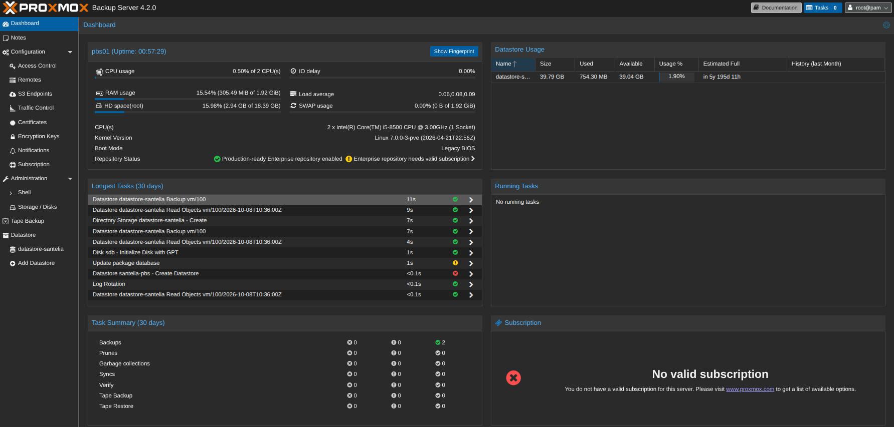
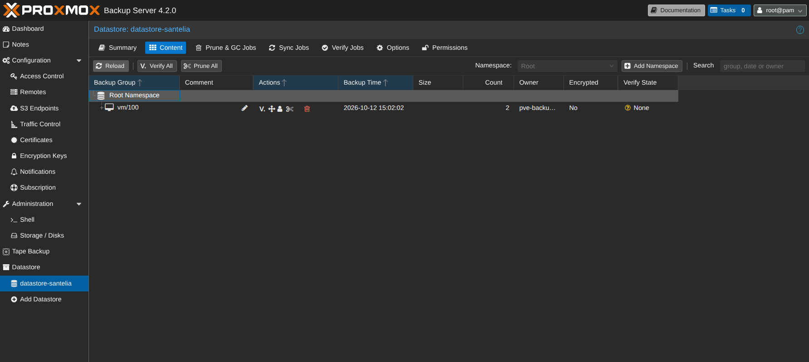
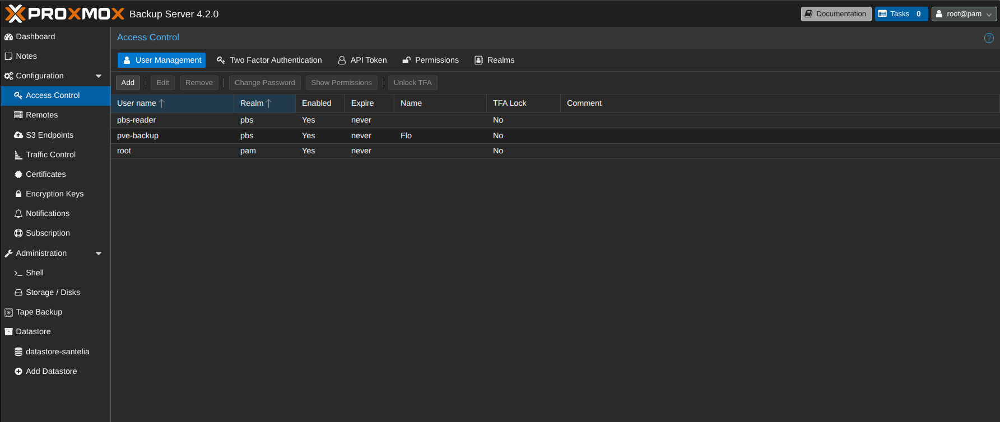
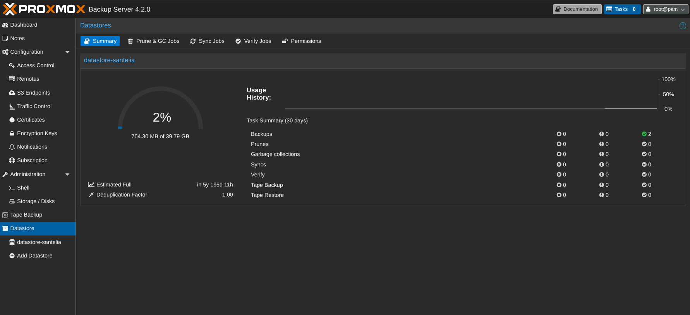
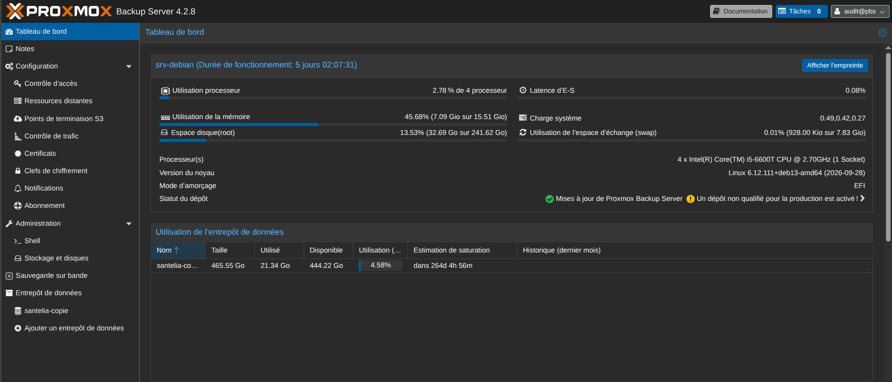
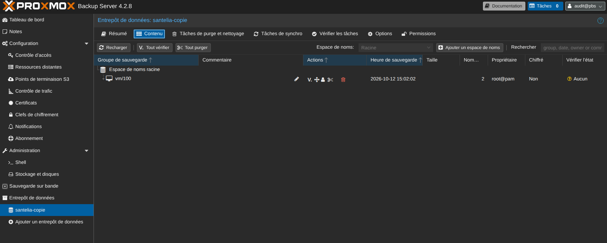
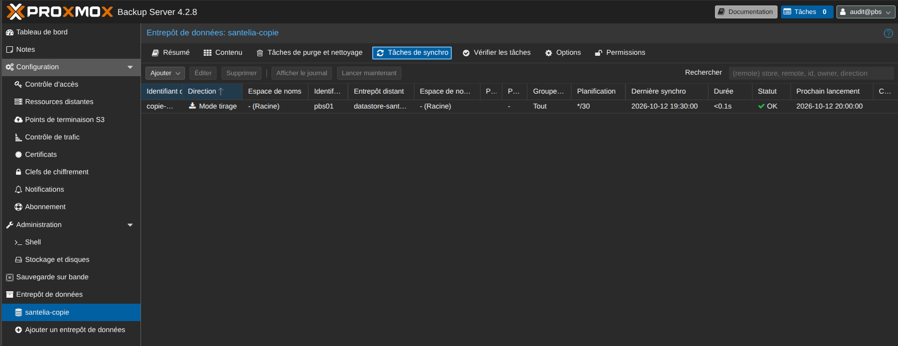

Ce que démontre la brique
- Sauvegarde cohérente : système de fichiers gelé puis libéré par l'agent invité
- Restauration exécutée vers une machine distincte, qui redémarre et rend son service
- Déduplication : 82 % réutilisés dès la première passe, 98 % à la seconde
- Compte de service à privilèges minimaux, connexion authentifiée par empreinte
- Copie sur une machine distincte, qui tire ses données sans détenir de droit d'écriture
- Perte maximale calculée sur le maillon le plus lent, pas sur la fréquence de copie
- Huit points de vigilance, dont une adresse IPv6 globale hors du mécanisme de traduction
Le serveur primaire en images




La copie secondaire en images



Une distinction qu'il faut garder en tête
La réplication entre nœuds, déjà en place, apporte de la disponibilité. Elle ne protège pas de la perte de données, car elle réplique aussi les erreurs : une suppression ou une corruption se propage d'un nœud à l'autre.
La sauvegarde répond à un besoin différent, celui de revenir à un état antérieur connu. Les deux mécanismes sont complémentaires et ne se substituent pas l'un à l'autre.